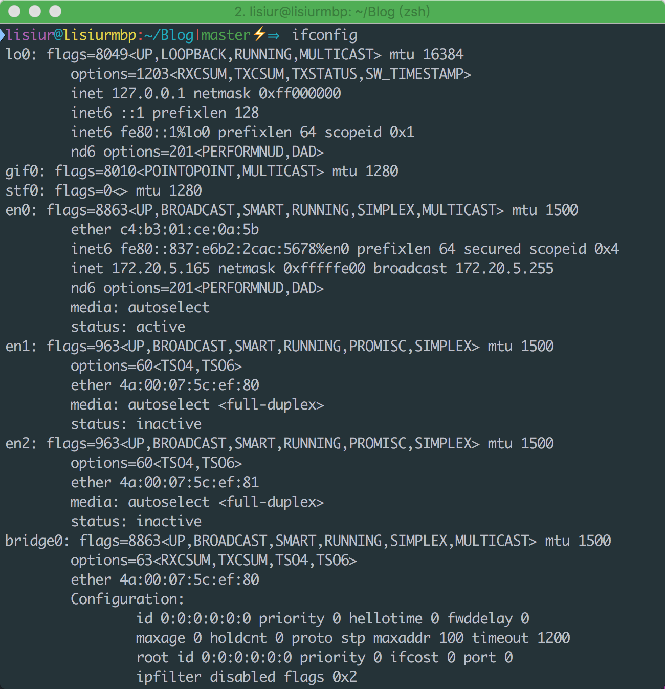
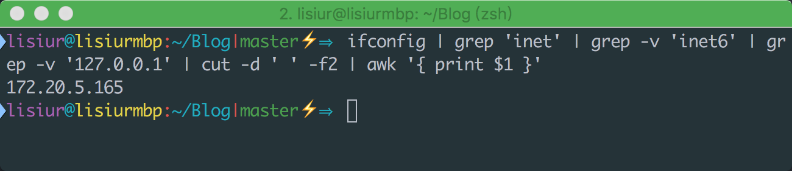
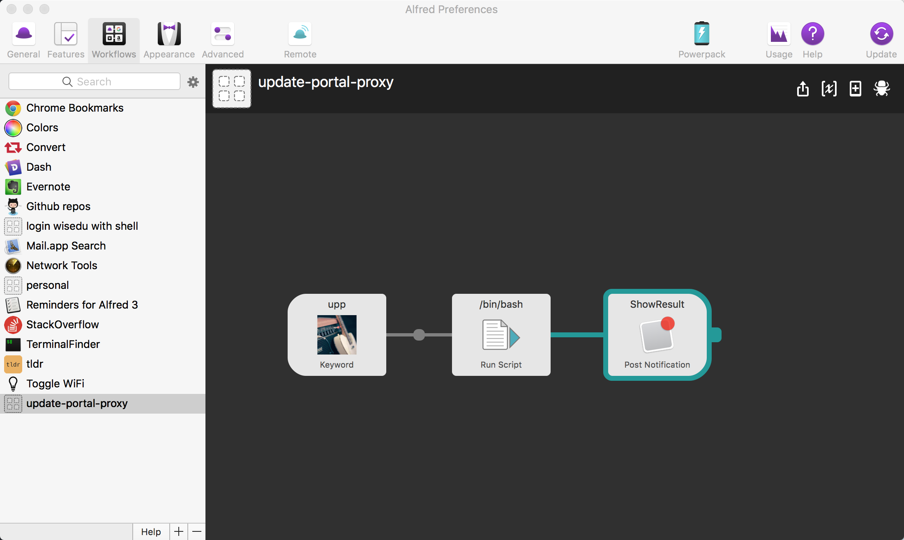
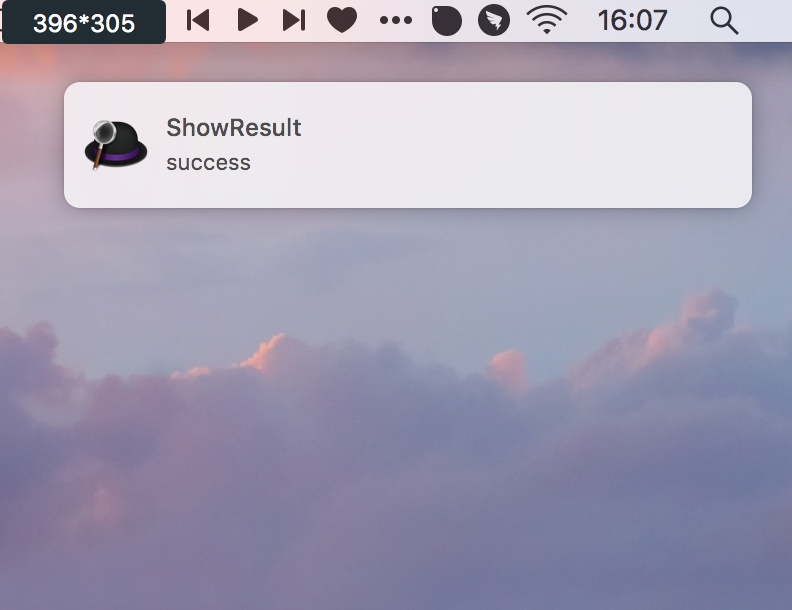

linux 上有个神器叫做 shell, 通过 shell 你可以给计算机下达任何指令。
Mac 上有个神器叫做 Alfred, 通过 Alfred 你可以使用一个快捷键完成任何一个工作流。
当 shell 遇见 Alfred，所有的工作流都只是抬手一挥间。
今天我将通过工作中一个实际的例子来展示我是如何通过自动化脚本(bash)和工具(Alfred)来提高我的工作效率。
事件起因
事情是这样的，我目前在负责公司门户前端的开发和维护，由于我们采用前后端分离的模式进行开发，所以我可以启动本地服务来伺服前端页面，而所有的异步请求则通过 proxy 代理到后端服务器上。原本是后端会单独在他的机器上启个服务，然后我把前端的请求通过内网代理到他的机器上进行调试。但考虑到前端改动较频繁，后端基本没有改动，加之后端抱怨单独开个服务影响其他工作的进行（公司的电脑，你懂得）。所以我们决定把前端的请求直接代理到已经运行在外网的服务器上，当然这需要部署应用的同事帮我单独设置个特殊代理，而他设置代理的过程就是添加一个特殊的代理配置，将我的 ip 代理到单独的一个上下文中。
本来是个很简单的事情，但问题是，我使用自己的笔记本开发，一旦下班后把笔记本带回去，第二天我的 ip 就变了。于是接下来的事情可想而知，我每天早上都要把我的最新 ip 告诉那位帮我加代理的同事，而他每天都要帮我重新设置一下。
大约两三个星期后吧，他跑过来教会了我如何自己配置代理……
需要做的事情不多，总结起来就三件事：
- 使用 ssh 远程登录服务器
- 修改某个配置文件，将其 ip 更新为最新的
- 重新加载配置文件
但，作为一个懒猿，我才不会每天都一步步来完成以上这么无聊而又没有技术含量的操作呢
于是就有了这篇文章 :)
开始自动化吧！
首先我们来梳理下，完成这个工作流所需要做的清单：
- 获取本机 ip
- 登录远程服务器
- 修改并重新加载配置文件
好，接下来我们一步步来
获取本机 ip
大家都知道可以通过 ifconfig(linux) 或 ipconfig(windows) 命令来获 ip 信息。那些说通过百度 ip 的程序员就先靠边站吧 :)
但是我们获取的一般是这样的结果：

额，你能一眼看到你的 ip 地址吗？反正我每次找起来都挺费力的。我们能不能只获取 ip 呢？可以的，做到这个我们所需要的只是一行脚本而已:
1 | ifconfig | grep 'inet' | grep -v 'inet6' | grep -v '127.0.0.1' | cut -d ' ' -f2 | awk '{ print $1 }' |

Good Job!
登录远程主机
一般我们都会选择 ssh 来登录远程主机(linux)，方便快捷安全，当然要选择他了。
ssh 登录的一般格式是：ssh username@host
比如我们要使用 lisiur这个用户的身份登录一个 ip 为 192.168.31.110 的主机。
1 | ssh lisiur@192.168.31.110 |
回车后，它会要求你输入用户密码，然后你就再输入密码回车，就可以进入远程主机的 shell 了(当然，前提是密码正确)。
每次都要输密码，好烦哦，能不输密码吗？可以的，我们只需输入两行命令：
1 | ssh-keygen -t rsa |
第一个命令回车后会让你设置密码，这里我们保留密码为空，一路回车就好，这时会在本地用户主目录下生成.ssh/id_rsa 和 .ssh/id_rsa.pub 这两个文件。id_rsa 就是你的私钥，id_rsa.pub 就是你的公钥了。
第二个命令会将你的公钥上传到目标服务器的 .ssh/authorized_keys 文件中。
这样，下次再次使用 ssh 登录远程主机时会带上你的私钥，远程主机拿着你的私钥匹配之前上传的公钥，匹配成功就可以确认你的身份而省去输入密码的步骤。
每次都要输入远程主机的 ip 地址，我记不住啊！能不输入 ip 就登录远程主机吗？可以的，我们要做的就是编辑一个文件：
我们可以通过编辑主目录下的 .ssh/config 文件（没有就新建一个），来配置登录主机的别名：
1 | # 加上下面的配置 |
如此，下次我们再登录这台主机时就只需要敲下这么一个命令：
1 | ssh lisiur |
Awesome!
修改并重新加载配置文件
重新加载配置文件比较简单，我们在终端执行指定的命令即可。有意思的是如何修改配置文件。
大家也许会说，修改文件还不简单，使用 vim 直接打开修改再保存不就好了？是的，确实是这样，但这不够极客，也不利于我们最终将这一套流程整理成脚本来处理。
需要注意的是，我们修改的这个文件只是将原先的 ip 改为最新的 ip 即可。这其实是一个替换操作，如何在不打开文件的前提下修改文件内容呢？sed 和 awk 都是可以的，这里我选择了使用 sed。
我们需要修改的文件大概长这样：
1 | /lisiur |
我们要做的就是把 172.20.5.165:8080 替换成目标 ip，使用 sed 操作的命令大概长这样：
1 | pattern1="http://.*;" |
最后我们可以把这步的操作写成一个脚本：
1 |
|
我们将上面的脚本保存为 ‘update_proxy.sh’，于是我们可以使用如下命令将配置文件的 ip 更新为 192.168.31.120 并重新加载该配置
1 | ./update_proxy.sh 192.168.31.120:8080 |
Perfect!
All Together
如此一来，我的工作就简单了，只要一个命令获取本机 ip，然后 ssh 登录远程主机，并执行 update_proxy.sh 脚本即可完成操作。
可是这样还是很繁琐，能不能只输入一个命令就完成所有操作呢？当然可以。为了不在远程主机上留下痕迹，我选择把 update_proxy.sh 拿到本地，然后通过 ssh 使远程主机执行本地脚本(这步是可选的)。
把他们结合起来就是：
1 | ip=`ifconfig | grep 'inet' | grep -v 'inet6' | grep -v '127.0.0.1' | cut -d ' ' -f2 | awk '{ print $1 }'` |
如此我们只需要执行这一个脚本就可以完成所有操作了。
可是我不想打开终端，敲任何指令怎么办呢？
在 Mac 上开发的同学就可以使用 Alfred 这款神器了。 简单的说 Alfred 就是一个工作流管理软件，通过它你可以将各种脚本和输入输出组合起来，最终通过一个快捷键来触发。对于他，我的评价就是买了 Mac 不装 Alfred，你就浪费了一半左右的钱。
由于我们这个脚本比较简单，使用的只是一个触发方式，因此我们只需要在 Alfred 里新建一个工作流，并定义一个触发关键词(比如 upp)，然后在工作流里执行我们写好的 bash 脚本就好了（哦，对了，如果你不喜欢 bash，Alfred 也支持 python 哦）

A Brand New Day
这样，每天早上来到公司，只需要打开电脑，敲下 Alt-Space 打开 Alfred 关键词触发窗口，输入 upp 并回车，看到如下的提示后，就可以愉快的调试前端代码了。

写在后面
如果我什么也不想敲，就想让他更新配置可以吗？好吧，真够懒的，不过也是可以的。
linux 系列的小伙伴可以使用 crontab 来给系统加个定时任务，比如每周一到周五的早上九点执行该脚本。详细操作流程感兴趣的可以自己 Google 一下。